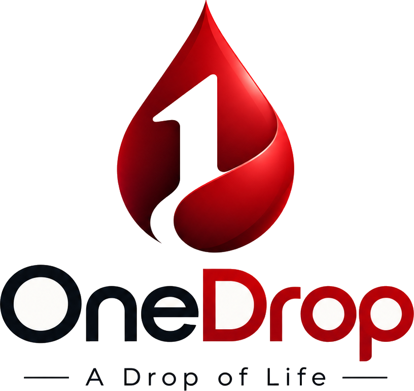

Built by students. Measured in minutes. Open to everyone in Bangladesh.
One Drop is planned, written and maintained by students of Notre Dame College, Dhaka — Batch 27. Free forever, volunteer-run, and designed for the moments when a hospital says “we need blood now.”
Why we built it
Started from a phone call that came too late
Like most things that matter, it began with a bad night. A relative of one of our classmates was admitted after a road accident, and the blood bank asked for two bags of O− by morning. What followed is what always follows in Bangladesh: a panic of phone calls, forwarded contacts, half-remembered numbers — while the clock kept moving. The blood arrived in time. But it left us with a question we could not put down: why was there no single place to ask, “who near me can donate today?”
One Drop is that place. Registering as a voluntary donor takes under a minute. Searching the directory needs no account at all. And when a family posts an emergency request, every volunteer with alerts enabled hears about it at the same moment — not one forwarded phone call at a time.
We are not a blood bank. We do not collect, screen, store or transport blood. We shorten the distance between a request and a willing arm — and we do it while keeping donors’ phone numbers off the public page.
Ground rules we follow: every listing is voluntary, unpaid and non-commercial. Selling blood is illegal in Bangladesh and against everything this project stands for. Moderators remove any listing that looks fake, paid or misleading.
Field notes
What this looks like under pressure
Three composite scenes, assembled from situations families have described to us. Names and details are changed; the sequence is exactly how the tools on this site are designed to behave.
Reference
Red-cell compatibility chart
Use this to decide which donors are worth calling first. Final decisions always belong to the treating doctor and the blood bank.
| Patient needs | A+ | A− | B+ | B− | AB+ | AB− | O+ | O− |
|---|

Credits
The people behind One Drop
Want to help? A directory is only as strong as the donors inside it. Share this site with your class, your hall, your mosque and temple committees, your neighbourhood group. Corrections and suggestions are always welcome through the contact form.